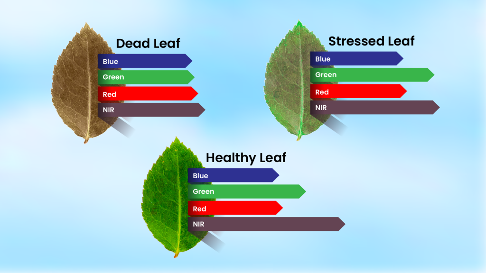
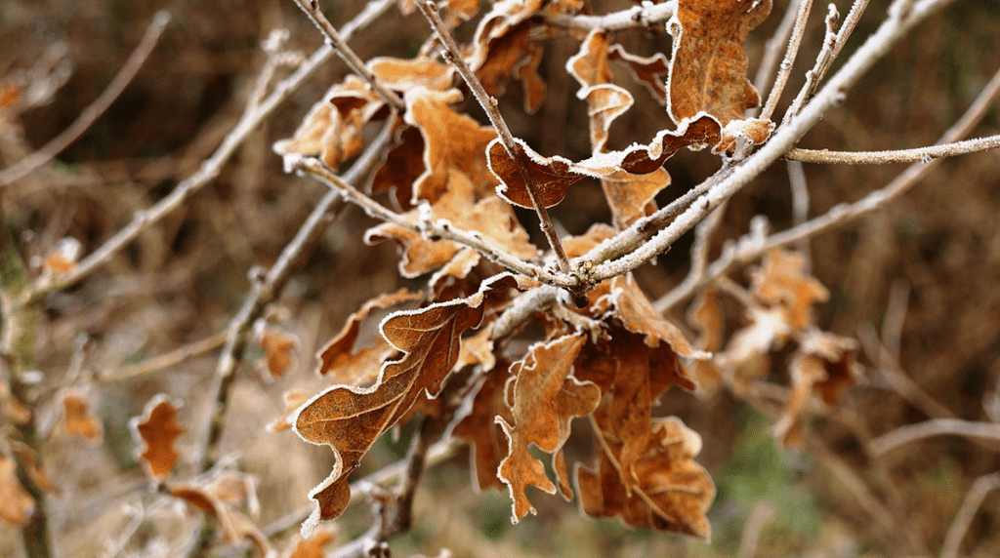
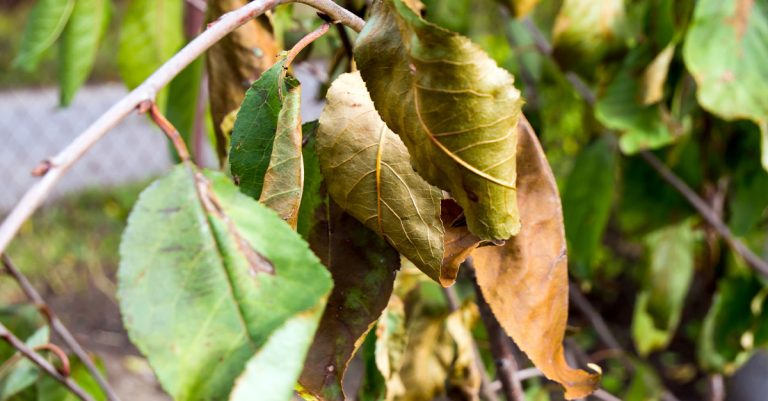
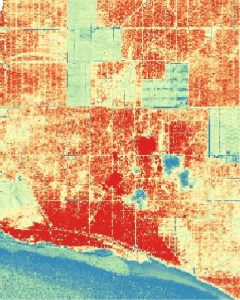
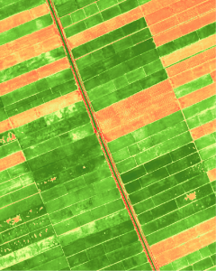
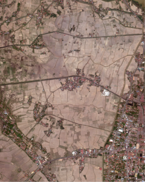
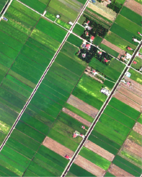
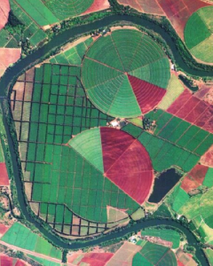

UZMASAT-1 APPLICATIONS
PRECISION AGRICULTURE
Consult Me Your Solutions Get Your Free Trial NowTransform your agricultural operations with Geospatial AI’s precision agriculture’s solutions, powered by cutting-edge technology and data. Our precise agriculture solutions leverage advanced geospatial analytics, satellite imagery, and predictive modelling to optimise your farming practices.
By understanding the unique characteristics of your fields, crops and climate, we can maximise yield, reduce costs, and minimise environmental impact.
Technology that Helps Farmers
Precision agriculture using satellite-based remote sensing revolutionizes modern farming by allowing farmers to improve crop yield, optimize resource use, and enhance decision-making based on critical, real-time information.
With satellite imagery, farmers can monitor large areas of land efficiently, tracking crop health, soil moisture, nutrient levels, and environmental stress factors over time.
Enhanced Crop Monitoring and Real-Time Insights
Remote sensing provides data for custom vegetation indices, which are tailored to reflect local soil, climate, and crop conditions, creating a more accurate classification of plant health and growth stages. These custom indices help farmers identify specific areas needing intervention, such as fertilization, irrigation, or pest management, ensuring resources are applied only where needed.



Data-Driven, Sustainable Farming Solutions
By leveraging these insights, farmers can minimize waste, reduce costs, and sustainably boost productivity, while also responding promptly to potential issues before they escalate.
This data-driven approach makes agriculture not only more efficient but also more adaptable to changing environmental conditions and market demands.
Agro .GAI
Precision Agriculture Solutions for Optimized Farming
Agro.GAI, our precision agriculture solution, uses advanced satellite imagery, geospatial analytics, and predictive modeling to optimize farming practices.
With tools for targeted crop monitoring, yield prediction, land use mapping, and environmental impact assessment, Agro.GAI helps maximize yield, reduce costs, and promote sustainable, data-driven agriculture.




